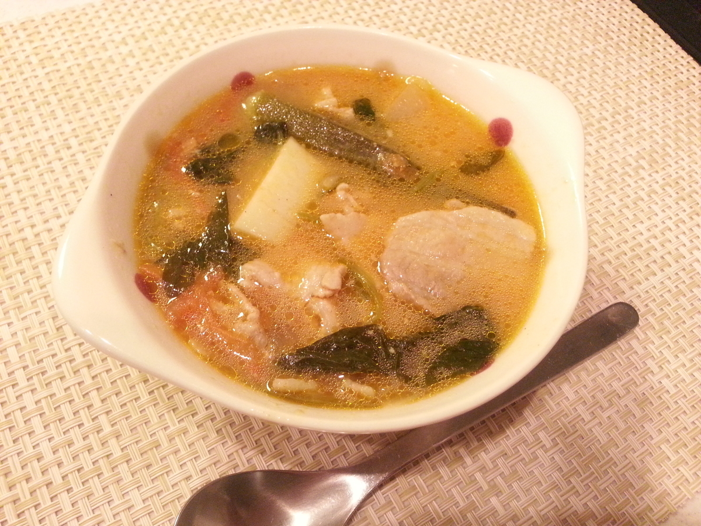

Sinigang

Description
Sinigang is a Filipino soup or stew characterized by its sour and savory taste. It is most often associated with tamarind, although it can use other sour fruits and leaves as the souring agent. It is one of the more popular dishes in Filipino cuisine. The soup is usually accompanied by rice.
Ingredients
- About 20g sinigang soup stock
- 2 tablespoons fish sauces
- 1L water
- 500g pork belly
- 1 medium onion
- 2 medium tomatoes
- 200g taro
- 200g radish
- 7 stalks okra
- 40g salad spinach
Steps
- Cut ingredients into desired size.
- Sauté onions and tomatoes in a frying pan and transfer to a pan. Fry the pork in the same way and transfer.
- Pour in 1 liter of water and heat it up. When the water comes to a boil, scoop out the lye.
- Add taro, radish and fish sauces and simmer for 20 minutes.
- Add okra and sinigang powder and simmer for 5 minutes.
- Add spinach and cook until tender.